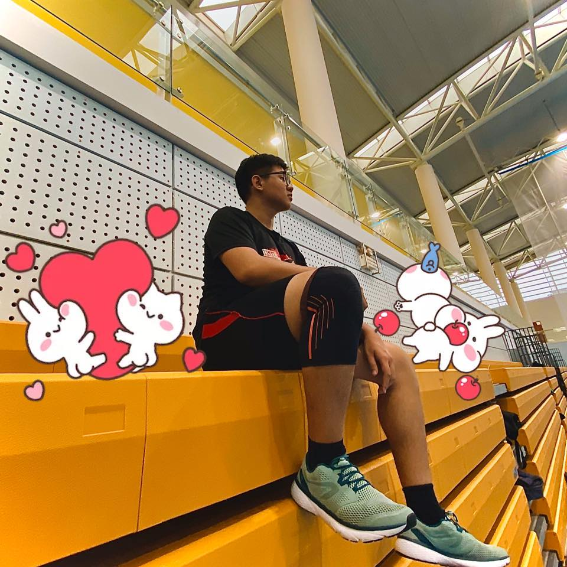

Team Name
Team Name: Sandbox. I choose this team name because in the movie: Start-up, I am really inspired by the company in this movie. It is a company that mainly supports and invests in new potential start-up projects. It sounds very similar to what we are doing in this assignment which is creating an IT project and particularly I want to create a grocery online shopping application.
Team Profile
Kieu Anh: Based on the result and her behavior through our discussions, I actually think the test has expressed her learning style and her personality. She prefers to use hands-on approaches, specifically, figuring out how something works by taking it apart and then reassembling it again that is quite similar to me. I am also a person who has to write things down and then divide it into different parts, it will help me to understand and do things better.
Thu: Thu is a plan-abiding person at work. When I work with her, I feel that she is very serious and careful with her work. She contributes hugely to the team’s discussion and always meets the team’s deadline on time that is very important.
Phat: Based on the result, he is a person who likes to observe things before giving a personal opinion that is very similar to me. As a second-year student, he is very welcome to help when I have a problem and try to improve the whole team’s productivity.
Bao: Bao is a visual learner and he can picture what he is learning in his head. These 2 things are exactly what I need for a teammate. I need a person who can visualize the project, have a farsightedness that makes it easier to do something when we work in a team.
Kieu Anh
Quoc Bao
Thu
Phat
